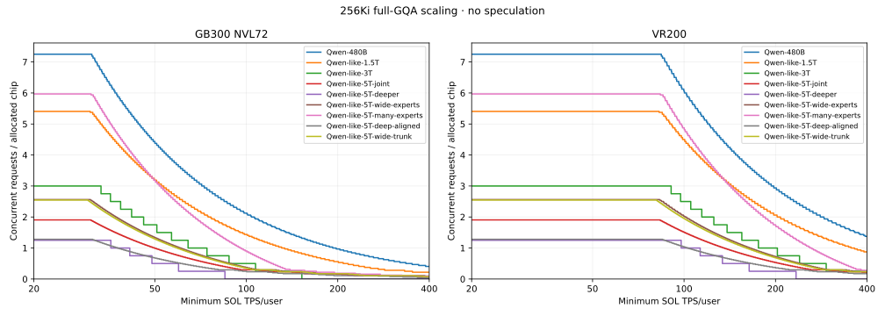
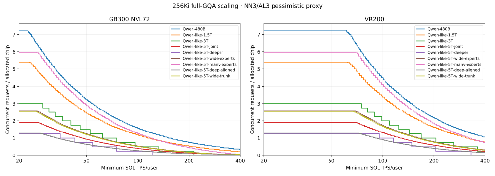
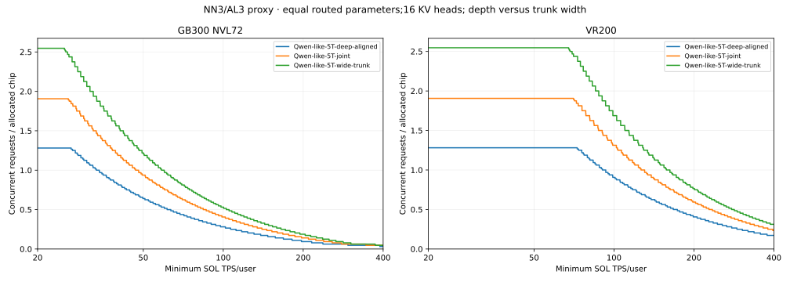
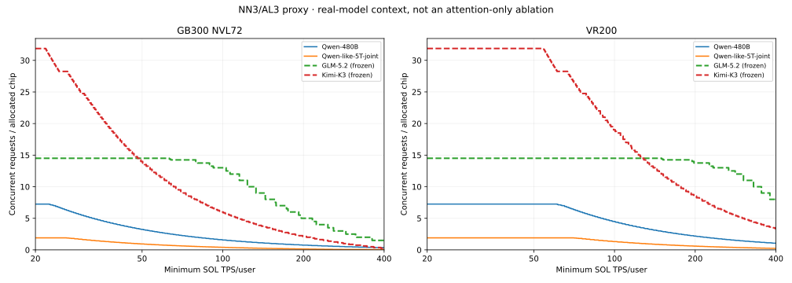
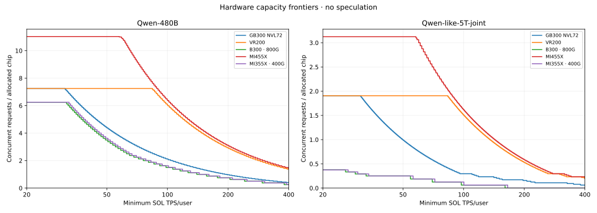
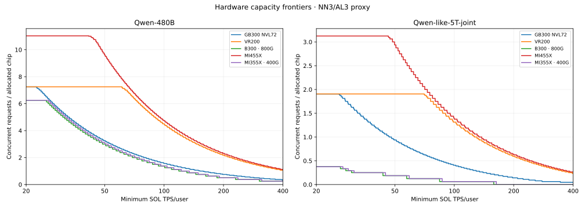
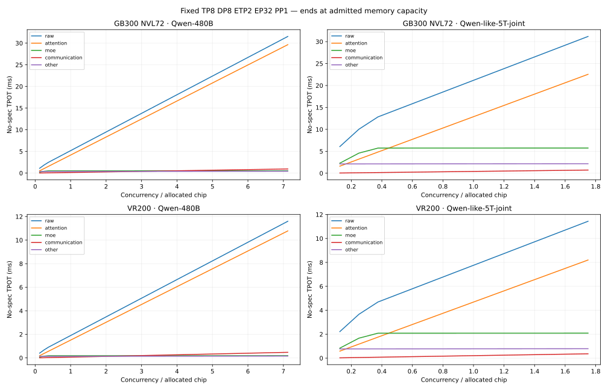
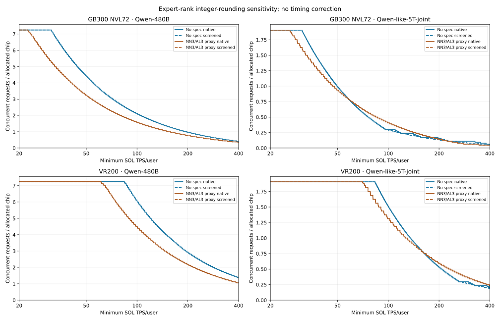

Separate exploratory study; the published GLM/Kimi index is unchanged. Native pinned AISim SOL; 262,144 cached tokens; FP8 KV; BF16 attention and non-expert GEMMs; hardware-adapted expert precision. No achieved-performance discount.
| Model | GB300 no-spec | GB300 NN3/AL3 | Rubin no-spec | Rubin NN3/AL3 |
|---|---|---|---|---|
| Qwen-480B | 2.125 | 1.562 | 6.062 | 4.500 |
| Qwen-like-1.5T | 1.438 | 1.188 | 4.500 | 3.375 |
| Qwen-like-3T | 0.500 | 0.500 | 2.500 | 2.000 |
| Qwen-like-5T-joint | 0.297 | 0.406 | 1.516 | 1.312 |
| Qwen-like-5T-deep-aligned | 0.250 | 0.281 | 1.031 | 0.906 |
| Qwen-like-5T-wide-trunk | 0.344 | 0.531 | 1.953 | 1.688 |
| Qwen-like-5T-many-experts | 0.906 | 1.250 | 4.875 | 4.125 |
Interpretation: full-GQA cache reads grow with concurrency×context×layers×KV heads. The baseline carries31GiB of FP8 KV per request at256Ki; joint5T carries96GiB. Unlike sparse/linear attention, these layers must read the whole prefix on every ordinary decode step. More HBM bandwidth therefore continues to matter well before the memory-capacity ceiling is reached.
At equal routed parameter budgets, deeper-aligned5T has144GiB KV/request, joint5T96GiB and wide-trunk5T72GiB. Their concurrency differences show why a parameter count alone is not a performance specification. The many-expert-only~5T control keeps31GiB KV/request and is deliberately not our central scaling assumption: keeping depth and attention fixed makes it much easier to serve at long context. Conversely,8-chip systems face the large-model weight-capacity limit and our conservative multi-node PP schedule. Their low scores do not establish an impossibility result for optimized interleaved PP.
All figures are conditional projections. The native speculation proxy may be slower than no-speculation when full-cache reads dominate; do not interpret that as evidence that a real reuse-aware Qwen speculative implementation would slow down.
| model | total_params_T | active_params_B | layers | hidden | expert_width | experts | topk | q_heads | kv_heads | fp8_kv_GiB_per_request |
|---|---|---|---|---|---|---|---|---|---|---|
| Qwen-480B | 0.480 | 35.475 | 62 | 6144 | 2560 | 160 | 8 | 96 | 8 | 31.000 |
| Qwen-like-1.5T | 1.465 | 87.589 | 80 | 6144 | 3072 | 320 | 16 | 96 | 8 | 40.000 |
| Qwen-like-3T | 2.932 | 177.437 | 80 | 9216 | 4096 | 320 | 16 | 144 | 12 | 60.000 |
| Qwen-like-5T-joint | 5.285 | 327.847 | 96 | 12288 | 4608 | 320 | 16 | 192 | 16 | 96.000 |
| Qwen-like-5T-deeper | 5.275 | 317.146 | 144 | 9216 | 4096 | 320 | 16 | 144 | 12 | 108.000 |
| Qwen-like-5T-wide-experts | 5.270 | 312.049 | 72 | 12288 | 6144 | 320 | 16 | 192 | 16 | 72.000 |
| Qwen-like-5T-many-experts | 5.162 | 270.126 | 62 | 6144 | 2560 | 1760 | 88 | 96 | 8 | 31.000 |
| Qwen-like-5T-deep-aligned | 5.265 | 307.275 | 144 | 8192 | 4608 | 320 | 16 | 128 | 16 | 144.000 |
| Qwen-like-5T-wide-trunk | 5.306 | 348.419 | 72 | 16384 | 4608 | 320 | 16 | 256 | 16 | 72.000 |
All layers retain full GQA, RoPE and routed top-5% MoE; no shared experts, SWA or MLA. All ~5T variants except many-experts have exactly equal routed parameter budgets; total counts differ slightly in attention. Many-expert control is only approximately parameter-matched. Counts are analytical matrix inventories including two embedding/logit matrices, router and small normalization terms; active counts include embeddings by convention. No quality equivalence or training feasibility claim.
Sharding confound: the3T and original deeper5T variants have12 KV heads, permitting only TP1/2/4 in this integral, power-of-two TP search. Their losses cannot be attributed to depth alone. The deep-aligned/joint/wide-trunk trio fixes16 KV heads,320/top16 experts and expert width4608 while trading144×8192,96×12288,72×16384 layers×hidden. This keeps routed parameters exactly fixed and admits wider TP/DCP. Query-to-KV ratios vary8/12/16. The separate wide-expert control trades depth for expert intermediate width.




Dashed GLM/Kimi curves reuse the frozen headline search and NN3/AL3 assumptions. Different sizes, attention, native speculative modeling and candidate families make these contextual comparisons, not isolated architecture effects. In particular, Qwen verification omits shared-prefix read reuse; these gaps must not be attributed solely to attention architecture.



Exclusive native top-level timing buckets sum to the full iteration. Attention includes its DCP merge operations where present; communication contains MoE dispatch/P2P and explicitly named collectives; other includes projections, routing, logits, elementwise work and the small embedding all-reduce. Thus these buckets are not an exact all-communication decomposition. The fixed-layout graph uses DCP1. No-spec single-query attention avoids the verification-reuse confound.
| hardware | model | nextn | pure_attention_pct | moe_pct | attention_math_ms | attention_HBM_ms | moe_math_ms | moe_HBM_ms |
|---|---|---|---|---|---|---|---|---|
| VR200 | Qwen-like-5T-joint | 3.000 | 86.318 | 7.343 | 0.765 | 25.370 | 0.081 | 2.158 |
| VR200 | Qwen-480B | 3.000 | 95.587 | 1.329 | 0.861 | 28.554 | 0.025 | 0.397 |
| GB300 NVL72 | Qwen-like-5T-joint | 0.000 | 42.105 | 50.477 | 0.147 | 3.827 | 0.010 | 4.588 |
| GB300 NVL72 | Qwen-480B | 3.000 | 93.330 | 1.871 | 1.047 | 27.268 | 0.020 | 0.547 |
| VR200 | Qwen-like-5T-joint | 0.000 | 71.154 | 20.904 | 0.214 | 7.104 | 0.023 | 2.087 |
| VR200 | Qwen-480B | 0.000 | 91.989 | 1.900 | 0.277 | 9.174 | 0.008 | 0.189 |
| GB300 NVL72 | Qwen-480B | 0.000 | 88.904 | 5.194 | 0.340 | 8.843 | 0.007 | 0.517 |
| GB300 NVL72 | Qwen-like-5T-joint | 3.000 | 73.313 | 20.090 | 0.829 | 21.600 | 0.058 | 5.919 |
The table isolates the pure attention and MoE operators, including their native math/HBM rooflines, at each100-TPS winner. Milliseconds are per native iteration before division by AL. In these cases memory time dominates arithmetic time; the5T no-spec case additionally spends much more of its budget reading expert weights.

Native Rust moe_sol charges min(E/EP, floor(N×topk/EP)) expert matrices per rank, where N=batch×DP×(nextn+1). This is unique-until-saturation, not a probability-of-overlap calculation; the workload-distribution label does not enter this SOL formula. Before saturation, fractional rank counts can undercharge critical-rank weight reads. For example, joint5T,TP64/DP1/EP64,batch1,no-spec charges zero MoE memory time. The screened envelope excludes candidates with N×topk<E and nonintegral N×topk/EP, keeping unchanged native timings otherwise. It is a restricted feasible-layout sensitivity, not a calibrated correction or real-runtime lower bound. The CSV reports its area retention and threshold capacities. Solid=native; dashed=screened. Overlap of lines means the screen did not change that section.
| hardware | model | nextn | memory_max_agents_chip | fastest_TPS | agents_chip_at_20 | agents_chip_at_50 | agents_chip_at_100 | agents_chip_at_200 | agents_chip_at_400 | log50_400_area | model_GB300e | screened_agents_chip_at_50 | screened_agents_chip_at_100 | screened_agents_chip_at_200 | screened_agents_chip_at_400 | screened_area_fraction |
|---|---|---|---|---|---|---|---|---|---|---|---|---|---|---|---|---|
| VR200 | Qwen-like-1.5T | 0 | 5.406 | 7889.617 | 5.406 | 5.406 | 4.500 | 2.062 | 0.875 | 6.801 | 2.812 | 5.406 | 4.500 | 2.062 | 0.875 | 1.000 |
| VR200 | Qwen-like-5T-wide-experts | 3 | 2.562 | 3752.340 | 2.562 | 2.562 | 1.750 | 0.781 | 0.312 | 2.830 | 3.130 | 2.562 | 1.750 | 0.781 | 0.312 | 1.000 |
| VR200 | Qwen-like-5T-joint | 3 | 1.906 | 3292.902 | 1.906 | 1.906 | 1.312 | 0.594 | 0.234 | 2.123 | 3.114 | 1.906 | 1.312 | 0.594 | 0.234 | 1.000 |
| VR200 | Qwen-like-5T-many-experts | 0 | 5.969 | 3352.675 | 5.969 | 5.969 | 4.875 | 1.750 | 0.281 | 6.797 | 4.012 | 5.969 | 4.875 | 1.750 | 0.281 | 1.000 |
| GB300 NVL72 | Qwen-like-5T-many-experts | 3 | 5.969 | 930.426 | 5.969 | 2.938 | 1.250 | 0.469 | 0.062 | 2.114 | 1.000 | 2.938 | 1.250 | 0.469 | 0.062 | 1.000 |
| VR200 | Qwen-like-5T-wide-trunk | 0 | 2.547 | 4219.820 | 2.547 | 2.547 | 1.953 | 0.688 | 0.234 | 2.830 | 3.629 | 2.547 | 1.953 | 0.688 | 0.219 | 0.999 |
| VR200 | Qwen-like-3T | 3 | 3.000 | 586.533 | 3.000 | 3.000 | 2.000 | 1.000 | 0.250 | 3.315 | 3.522 | 3.000 | 2.000 | 1.000 | 0.250 | 1.000 |
| VR200 | Qwen-480B | 3 | 7.250 | 9038.723 | 7.250 | 7.250 | 4.500 | 2.188 | 1.062 | 7.605 | 2.758 | 7.250 | 4.500 | 2.188 | 1.062 | 1.000 |
| GB300 NVL72 | Qwen-like-5T-joint | 0 | 1.906 | 1613.184 | 1.906 | 1.000 | 0.297 | 0.156 | 0.062 | 0.636 | 1.000 | 1.000 | 0.297 | 0.141 | 0.062 | 0.968 |
| GB300 NVL72 | Qwen-like-5T-wide-experts | 3 | 2.562 | 1372.461 | 2.562 | 1.250 | 0.547 | 0.188 | 0.047 | 0.904 | 1.000 | 1.250 | 0.547 | 0.188 | 0.047 | 1.000 |
| VR200 | Qwen-like-5T-wide-trunk | 3 | 2.547 | 3434.316 | 2.547 | 2.547 | 1.688 | 0.766 | 0.312 | 2.766 | 3.159 | 2.547 | 1.688 | 0.766 | 0.312 | 1.000 |
| VR200 | Qwen-like-5T-wide-experts | 0 | 2.562 | 5850.366 | 2.562 | 2.562 | 2.031 | 0.719 | 0.234 | 2.904 | 3.565 | 2.562 | 2.031 | 0.719 | 0.219 | 0.999 |
| VR200 | Qwen-like-5T-deep-aligned | 3 | 1.281 | 2934.329 | 1.281 | 1.281 | 0.906 | 0.406 | 0.172 | 1.453 | 3.077 | 1.281 | 0.906 | 0.406 | 0.172 | 1.000 |
| GB300 NVL72 | Qwen-480B | 3 | 7.250 | 3307.517 | 7.250 | 3.250 | 1.562 | 0.750 | 0.344 | 2.757 | 1.000 | 3.250 | 1.562 | 0.750 | 0.344 | 1.000 |
| GB300 NVL72 | Qwen-like-5T-wide-experts | 0 | 2.562 | 2141.817 | 2.562 | 1.344 | 0.375 | 0.172 | 0.094 | 0.815 | 1.000 | 1.344 | 0.375 | 0.156 | 0.062 | 0.974 |
| VR200 | Qwen-like-5T-deeper | 0 | 1.250 | 233.674 | 1.250 | 1.250 | 1.000 | 0.250 | 0.000 | 1.300 | 7.311 | 1.250 | 1.000 | 0.250 | 0.000 | 1.000 |
| GB300 NVL72 | Qwen-like-5T-deeper | 0 | 1.250 | 85.062 | 1.250 | 0.500 | 0.000 | 0.000 | 0.000 | 0.178 | 1.000 | 0.500 | 0.000 | 0.000 | 0.000 | 1.000 |
| GB300 NVL72 | Qwen-like-1.5T | 3 | 5.406 | 1920.569 | 5.406 | 2.500 | 1.188 | 0.531 | 0.219 | 2.039 | 1.000 | 2.500 | 1.188 | 0.531 | 0.219 | 1.000 |
| VR200 | Qwen-like-5T-joint | 0 | 1.906 | 4406.557 | 1.906 | 1.906 | 1.516 | 0.531 | 0.203 | 2.174 | 3.417 | 1.906 | 1.516 | 0.531 | 0.188 | 0.997 |
| VR200 | Qwen-480B | 0 | 7.250 | 10726.137 | 7.250 | 7.250 | 6.062 | 2.938 | 1.375 | 9.339 | 2.563 | 7.250 | 6.062 | 2.938 | 1.375 | 1.000 |
| GB300 NVL72 | Qwen-like-5T-deep-aligned | 3 | 1.281 | 1073.380 | 1.281 | 0.641 | 0.281 | 0.094 | 0.031 | 0.472 | 1.000 | 0.641 | 0.281 | 0.094 | 0.031 | 1.000 |
| VR200 | Qwen-like-3T | 0 | 3.000 | 418.733 | 3.000 | 3.000 | 2.500 | 1.000 | 0.250 | 3.495 | 4.328 | 3.000 | 2.500 | 1.000 | 0.250 | 1.000 |
| GB300 NVL72 | Qwen-like-5T-wide-trunk | 0 | 2.547 | 1544.397 | 2.547 | 1.297 | 0.344 | 0.172 | 0.078 | 0.780 | 1.000 | 1.297 | 0.344 | 0.141 | 0.062 | 0.972 |
| GB300 NVL72 | Qwen-like-3T | 3 | 3.000 | 214.665 | 3.000 | 1.500 | 0.500 | 0.250 | 0.000 | 0.941 | 1.000 | 1.500 | 0.500 | 0.250 | 0.000 | 1.000 |
| GB300 NVL72 | Qwen-like-5T-deeper | 3 | 1.250 | 121.557 | 1.250 | 0.750 | 0.250 | 0.000 | 0.000 | 0.345 | 1.000 | 0.750 | 0.250 | 0.000 | 0.000 | 1.000 |
| VR200 | Qwen-like-5T-deep-aligned | 0 | 1.281 | 4251.755 | 1.281 | 1.281 | 1.031 | 0.375 | 0.172 | 1.501 | 3.153 | 1.281 | 1.031 | 0.375 | 0.156 | 0.996 |
| GB300 NVL72 | Qwen-like-5T-deep-aligned | 0 | 1.281 | 1556.128 | 1.281 | 0.688 | 0.250 | 0.109 | 0.047 | 0.476 | 1.000 | 0.688 | 0.250 | 0.109 | 0.047 | 0.964 |
| GB300 NVL72 | Qwen-like-5T-many-experts | 0 | 5.969 | 1221.184 | 5.969 | 3.188 | 0.906 | 0.188 | 0.094 | 1.694 | 1.000 | 3.188 | 0.906 | 0.188 | 0.094 | 0.998 |
| GB300 NVL72 | Qwen-like-5T-wide-trunk | 3 | 2.547 | 1257.760 | 2.547 | 1.219 | 0.531 | 0.188 | 0.047 | 0.876 | 1.000 | 1.219 | 0.531 | 0.188 | 0.047 | 1.000 |
| GB300 NVL72 | Qwen-like-1.5T | 0 | 5.406 | 2883.923 | 5.406 | 3.188 | 1.438 | 0.562 | 0.219 | 2.419 | 1.000 | 3.188 | 1.438 | 0.562 | 0.188 | 0.999 |
| VR200 | Qwen-like-5T-many-experts | 3 | 5.969 | 2554.145 | 5.969 | 5.969 | 4.125 | 1.875 | 0.750 | 6.629 | 3.136 | 5.969 | 4.125 | 1.875 | 0.750 | 1.000 |
| GB300 NVL72 | Qwen-480B | 0 | 7.250 | 3921.524 | 7.250 | 4.438 | 2.125 | 0.969 | 0.406 | 3.645 | 1.000 | 4.438 | 2.125 | 0.969 | 0.406 | 1.000 |
| GB300 NVL72 | Qwen-like-3T | 0 | 3.000 | 152.367 | 3.000 | 1.750 | 0.500 | 0.000 | 0.000 | 0.807 | 1.000 | 1.750 | 0.500 | 0.000 | 0.000 | 1.000 |
| GB300 NVL72 | Qwen-like-5T-joint | 3 | 1.906 | 1205.519 | 1.906 | 0.938 | 0.406 | 0.141 | 0.047 | 0.682 | 1.000 | 0.938 | 0.406 | 0.141 | 0.047 | 1.000 |
| VR200 | Qwen-like-1.5T | 3 | 5.406 | 5257.047 | 5.406 | 5.406 | 3.375 | 1.625 | 0.750 | 5.737 | 2.813 | 5.406 | 3.375 | 1.625 | 0.750 | 1.000 |
| VR200 | Qwen-like-5T-deeper | 3 | 1.250 | 332.127 | 1.250 | 1.250 | 1.000 | 0.500 | 0.000 | 1.470 | 4.262 | 1.250 | 1.000 | 0.500 | 0.000 | 1.000 |
| hardware | model | nextn | target_TPS | capacity | layout | requests | allocated_chips | actual_TPS | memory_GiB_rank |
|---|---|---|---|---|---|---|---|---|---|
| VR200 | Qwen-like-5T-joint | 3.000 | 50 | 1.906 | TP64 DP1 DCP4 ETP1 EP64 PP1 | 122 | 64 | 70.409 | 240.096 |
| VR200 | Qwen-like-5T-joint | 3.000 | 100 | 1.312 | TP16 DP4 DCP1 ETP1 EP64 PP1 | 84 | 64 | 102.073 | 186.548 |
| VR200 | Qwen-like-5T-joint | 3.000 | 200 | 0.594 | TP32 DP2 DCP2 ETP1 EP64 PP1 | 38 | 64 | 202.830 | 111.798 |
| VR200 | Qwen-480B | 3.000 | 50 | 7.250 | TP16 DP4 DCP2 ETP2 EP32 PP1 | 464 | 64 | 61.157 | 241.375 |
| VR200 | Qwen-480B | 3.000 | 100 | 4.500 | TP4 DP8 DCP1 ETP1 EP32 PP1 | 144 | 32 | 100.426 | 161.268 |
| VR200 | Qwen-480B | 3.000 | 200 | 2.188 | TP16 DP2 DCP2 ETP1 EP32 PP1 | 70 | 32 | 201.177 | 83.444 |
| GB300 NVL72 | Qwen-like-5T-joint | 0.000 | 50 | 1.000 | TP64 DP1 DCP4 ETP1 EP64 PP1 | 64 | 64 | 50.146 | 150.220 |
| GB300 NVL72 | Qwen-like-5T-joint | 0.000 | 100 | 0.297 | TP64 DP1 DCP4 ETP1 EP64 PP1 | 19 | 64 | 110.031 | 80.610 |
| GB300 NVL72 | Qwen-like-5T-joint | 0.000 | 200 | 0.156 | TP64 DP1 DCP4 ETP1 EP64 PP1 | 10 | 64 | 206.022 | 66.688 |
| B300 · 800G | Qwen-like-5T-joint | 0.000 | 50 | 0.250 | TP8 DP1 DCP1 ETP1 EP8 PP2 | 4 | 16 | 54.472 | 238.119 |
| B300 · 800G | Qwen-like-5T-joint | 0.000 | 100 | 0.062 | TP8 DP1 DCP1 ETP1 EP8 PP2 | 1 | 16 | 160.572 | 200.994 |
| B300 · 800G | Qwen-like-5T-joint | 0 | 200 | 0.000 | |||||
| B300 · 800G | Qwen-like-5T-joint | 3.000 | 50 | 0.188 | TP8 DP1 DCP1 ETP1 EP8 PP2 | 3 | 16 | 57.372 | 225.745 |
| B300 · 800G | Qwen-like-5T-joint | 3.000 | 100 | 0.062 | TP8 DP1 DCP1 ETP1 EP8 PP2 | 1 | 16 | 158.463 | 200.994 |
| B300 · 800G | Qwen-like-5T-joint | 3 | 200 | 0.000 | |||||
| B300 · 800G | Qwen-480B | 3.000 | 50 | 3.000 | TP8 DP1 DCP1 ETP1 EP8 PP1 | 24 | 8 | 50.585 | 134.362 |
| B300 · 800G | Qwen-480B | 3.000 | 100 | 1.375 | TP8 DP1 DCP1 ETP1 EP8 PP1 | 11 | 8 | 100.652 | 82.412 |
| B300 · 800G | Qwen-480B | 3.000 | 200 | 0.500 | TP8 DP1 DCP1 ETP1 EP8 PP1 | 4 | 8 | 230.235 | 54.439 |
| B300 · 800G | Qwen-480B | 0.000 | 50 | 3.500 | TP8 DP1 DCP1 ETP1 EP8 PP1 | 28 | 8 | 50.577 | 150.345 |
| B300 · 800G | Qwen-480B | 0.000 | 100 | 1.500 | TP8 DP1 DCP1 ETP1 EP8 PP1 | 12 | 8 | 106.215 | 86.408 |
| B300 · 800G | Qwen-480B | 0.000 | 200 | 0.750 | TP8 DP1 DCP1 ETP1 EP8 PP1 | 6 | 8 | 204.332 | 62.431 |
| GB300 NVL72 | Qwen-480B | 3.000 | 50 | 3.250 | TP8 DP4 DCP1 ETP1 EP32 PP1 | 104 | 32 | 50.526 | 118.647 |
| GB300 NVL72 | Qwen-480B | 3.000 | 100 | 1.562 | TP16 DP4 DCP2 ETP2 EP32 PP1 | 100 | 64 | 102.681 | 59.512 |
| GB300 NVL72 | Qwen-480B | 3.000 | 200 | 0.750 | TP16 DP4 DCP2 ETP2 EP32 PP1 | 48 | 64 | 208.135 | 33.537 |
| VR200 | Qwen-like-5T-joint | 0.000 | 50 | 1.906 | TP64 DP1 DCP4 ETP1 EP64 PP1 | 122 | 64 | 83.459 | 239.939 |
| VR200 | Qwen-like-5T-joint | 0.000 | 100 | 1.516 | TP64 DP1 DCP4 ETP1 EP64 PP1 | 97 | 64 | 100.161 | 201.267 |
| VR200 | Qwen-like-5T-joint | 0.000 | 200 | 0.531 | TP64 DP1 DCP4 ETP1 EP64 PP1 | 34 | 64 | 202.067 | 103.813 |
| VR200 | Qwen-480B | 0.000 | 50 | 7.250 | TP16 DP4 DCP2 ETP2 EP32 PP1 | 464 | 64 | 84.205 | 241.334 |
| VR200 | Qwen-480B | 0.000 | 100 | 6.062 | TP16 DP4 DCP2 ETP2 EP32 PP1 | 388 | 64 | 100.269 | 203.371 |
| VR200 | Qwen-480B | 0.000 | 200 | 2.938 | TP16 DP4 DCP2 ETP2 EP32 PP1 | 188 | 64 | 201.355 | 103.468 |
| GB300 NVL72 | Qwen-480B | 0.000 | 50 | 4.438 | TP16 DP4 DCP2 ETP2 EP32 PP1 | 284 | 64 | 50.015 | 151.422 |
| GB300 NVL72 | Qwen-480B | 0.000 | 100 | 2.125 | TP16 DP4 DCP2 ETP2 EP32 PP1 | 136 | 64 | 100.533 | 77.494 |
| GB300 NVL72 | Qwen-480B | 0.000 | 200 | 0.969 | TP32 DP2 DCP4 ETP2 EP32 PP1 | 62 | 64 | 203.258 | 39.912 |
| GB300 NVL72 | Qwen-like-5T-joint | 3.000 | 50 | 0.938 | TP16 DP4 DCP1 ETP1 EP64 PP1 | 60 | 64 | 50.824 | 149.422 |
| GB300 NVL72 | Qwen-like-5T-joint | 3.000 | 100 | 0.406 | TP64 DP1 DCP4 ETP1 EP64 PP1 | 26 | 64 | 101.823 | 91.439 |
| GB300 NVL72 | Qwen-like-5T-joint | 3.000 | 200 | 0.141 | TP64 DP1 DCP4 ETP1 EP64 PP1 | 9 | 64 | 209.255 | 65.142 |
Concurrency / chip = requests divided by all allocated chips. Batch per attention replica is different: requests = batch × DP. DCP is contained within TP, not another multiplicative chip dimension; total chips = TP × DP × PP. These tables select maximum density first and fastest configuration on density ties.
| hardware | model | nextn | memory_max_agents_chip | fastest_TPS | agents_chip_at_20 | agents_chip_at_50 | agents_chip_at_100 | agents_chip_at_200 | agents_chip_at_400 | log50_400_area | model_GB300e | screened_agents_chip_at_50 | screened_agents_chip_at_100 | screened_agents_chip_at_200 | screened_agents_chip_at_400 | screened_area_fraction |
|---|---|---|---|---|---|---|---|---|---|---|---|---|---|---|---|---|
| Ascend 950PR | Qwen-480B | 3 | 3.125 | 670.761 | 1.656 | 0.625 | 0.312 | 0.125 | 0.031 | 0.510 | 0.185 | 0.625 | 0.312 | 0.125 | 0.031 | 1.000 |
| TPU7x Ironwood · FP8 | Qwen-480B | 3 | 5.125 | 2560.899 | 5.125 | 2.906 | 1.375 | 0.688 | 0.312 | 2.450 | 0.888 | 2.906 | 1.375 | 0.688 | 0.312 | 1.000 |
| Ascend 960PR | Qwen-like-5T-joint | 3 | 1.328 | 366.646 | 0.750 | 0.250 | 0.094 | 0.031 | 0.000 | 0.160 | 0.234 | 0.250 | 0.094 | 0.031 | 0.000 | 1.000 |
| VR200 | Qwen-like-5T-joint | 3 | 1.906 | 3292.902 | 1.906 | 1.906 | 1.312 | 0.594 | 0.234 | 2.123 | 3.114 | 1.906 | 1.312 | 0.594 | 0.234 | 1.000 |
| Jalapeño | Qwen-480B | 0 | 5.844 | 7348.037 | 5.844 | 5.844 | 4.000 | 1.875 | 0.875 | 6.556 | 1.799 | 5.844 | 4.000 | 1.875 | 0.875 | 1.000 |
| TPU8i · corrected · hops | Qwen-480B | 3 | 7.312 | 1808.136 | 7.312 | 3.438 | 1.656 | 0.750 | 0.312 | 2.861 | 1.037 | 3.438 | 1.656 | 0.750 | 0.312 | 1.000 |
| Jalapeño | Qwen-480B | 3 | 5.844 | 6171.261 | 5.844 | 5.750 | 3.000 | 1.438 | 0.688 | 5.230 | 1.897 | 5.750 | 3.000 | 1.438 | 0.688 | 1.000 |
| VR200 | Qwen-480B | 3 | 7.250 | 9038.723 | 7.250 | 7.250 | 4.500 | 2.188 | 1.062 | 7.605 | 2.758 | 7.250 | 4.500 | 2.188 | 1.062 | 1.000 |
| Ascend 960PR | Qwen-480B | 3 | 4.812 | 1004.996 | 2.500 | 0.969 | 0.469 | 0.219 | 0.094 | 0.799 | 0.290 | 0.969 | 0.469 | 0.219 | 0.094 | 1.000 |
| Ascend 950DT | Qwen-480B | 3 | 3.531 | 1669.284 | 3.531 | 1.625 | 0.781 | 0.375 | 0.156 | 1.365 | 0.495 | 1.625 | 0.781 | 0.375 | 0.156 | 1.000 |
| GB300 NVL72 | Qwen-like-5T-joint | 0 | 1.906 | 1613.184 | 1.906 | 1.000 | 0.297 | 0.156 | 0.062 | 0.636 | 1.000 | 1.000 | 0.297 | 0.141 | 0.062 | 0.968 |
| B300 · 800G | Qwen-like-5T-joint | 0 | 0.375 | 160.572 | 0.375 | 0.250 | 0.062 | 0.000 | 0.000 | 0.141 | 0.221 | 0.250 | 0.062 | 0.000 | 0.000 | 1.000 |
| TPU7x Ironwood · FP8 | Qwen-like-5T-joint | 3 | 1.266 | 807.871 | 1.266 | 0.812 | 0.344 | 0.125 | 0.031 | 0.588 | 0.863 | 0.812 | 0.344 | 0.125 | 0.031 | 1.000 |
| B300 · 800G | Qwen-like-5T-joint | 3 | 0.375 | 158.463 | 0.375 | 0.188 | 0.062 | 0.000 | 0.000 | 0.113 | 0.166 | 0.188 | 0.062 | 0.000 | 0.000 | 1.000 |
| MI355X · 400G | Qwen-480B | 0 | 6.250 | 914.500 | 6.250 | 3.625 | 1.625 | 0.750 | 0.250 | 2.777 | 0.762 | 3.625 | 1.625 | 0.750 | 0.250 | 1.000 |
| B200 · 800G | Qwen-480B | 0 | 3.500 | 881.921 | 3.500 | 3.500 | 1.500 | 0.750 | 0.250 | 2.661 | 0.730 | 3.500 | 1.500 | 0.750 | 0.250 | 1.000 |
| B300 · 800G | Qwen-480B | 3 | 6.250 | 844.852 | 6.250 | 3.000 | 1.375 | 0.500 | 0.250 | 2.265 | 0.821 | 3.000 | 1.375 | 0.500 | 0.250 | 1.000 |
| GB200 NVL72 | Qwen-like-5T-joint | 0 | 1.047 | 1612.477 | 1.047 | 1.000 | 0.297 | 0.156 | 0.062 | 0.636 | 1.000 | 1.000 | 0.297 | 0.141 | 0.062 | 0.968 |
| B300 · 800G | Qwen-480B | 0 | 6.250 | 887.632 | 6.250 | 3.500 | 1.500 | 0.750 | 0.250 | 2.682 | 0.736 | 3.500 | 1.500 | 0.750 | 0.250 | 1.000 |
| H100 SXM · FP8 · 400G | Qwen-like-5T-joint | 3 | 0.000 | 0.000 | 0.000 | 0.000 | 0.000 | 0.000 | 0.000 | 0.000 | 0.000 | 0.000 | 0.000 | 0.000 | 0.000 | None |
| TPU8t · FP4 equivalent | Qwen-480B | 0 | 5.438 | 3217.791 | 5.438 | 3.625 | 1.750 | 0.812 | 0.375 | 3.037 | 0.833 | 3.625 | 1.750 | 0.812 | 0.375 | 1.000 |
| GB200 NVL72 | Qwen-480B | 0 | 4.594 | 3920.774 | 4.594 | 4.438 | 2.125 | 0.969 | 0.406 | 3.645 | 1.000 | 4.438 | 2.125 | 0.969 | 0.406 | 1.000 |
| GB300 NVL72 | Qwen-480B | 3 | 7.250 | 3307.517 | 7.250 | 3.250 | 1.562 | 0.750 | 0.344 | 2.757 | 1.000 | 3.250 | 1.562 | 0.750 | 0.344 | 1.000 |
| H200 SXM · FP8 · 400G | Qwen-480B | 0 | 1.625 | 479.182 | 1.625 | 1.625 | 0.750 | 0.250 | 0.125 | 1.237 | 0.339 | 1.625 | 0.750 | 0.250 | 0.125 | 1.000 |
| MI455X | Qwen-480B | 3 | 11.031 | 9559.860 | 11.031 | 9.625 | 4.750 | 2.312 | 1.125 | 8.271 | 3.000 | 9.625 | 4.750 | 2.312 | 1.125 | 1.000 |
| MI455X | Qwen-like-5T-joint | 0 | 3.125 | 4660.725 | 3.125 | 3.125 | 1.625 | 0.594 | 0.234 | 2.686 | 4.221 | 3.125 | 1.625 | 0.594 | 0.203 | 0.998 |
| TPU7x Ironwood · FP8 | Qwen-like-5T-joint | 0 | 1.266 | 1475.635 | 1.266 | 0.875 | 0.234 | 0.109 | 0.047 | 0.506 | 0.795 | 0.875 | 0.234 | 0.078 | 0.031 | 0.963 |
| B200 · 800G | Qwen-480B | 3 | 3.500 | 839.421 | 3.500 | 3.000 | 1.375 | 0.500 | 0.250 | 2.247 | 0.815 | 3.000 | 1.375 | 0.500 | 0.250 | 1.000 |
| MI355X · 400G | Qwen-like-5T-joint | 3 | 0.375 | 163.327 | 0.375 | 0.188 | 0.062 | 0.000 | 0.000 | 0.119 | 0.174 | 0.188 | 0.062 | 0.000 | 0.000 | 1.000 |
| MI355X · 400G | Qwen-480B | 3 | 6.250 | 869.872 | 6.250 | 3.125 | 1.375 | 0.500 | 0.250 | 2.343 | 0.850 | 3.125 | 1.375 | 0.500 | 0.250 | 1.000 |
| VR200 | Qwen-like-5T-joint | 0 | 1.906 | 4406.557 | 1.906 | 1.906 | 1.516 | 0.531 | 0.203 | 2.174 | 3.417 | 1.906 | 1.516 | 0.531 | 0.188 | 0.997 |
| GB200 NVL72 | Qwen-like-5T-joint | 3 | 1.047 | 1205.519 | 1.047 | 0.938 | 0.406 | 0.141 | 0.047 | 0.682 | 1.000 | 0.938 | 0.406 | 0.141 | 0.047 | 1.000 |
| MI455X | Qwen-480B | 0 | 11.031 | 11347.294 | 11.031 | 11.031 | 6.375 | 3.125 | 1.438 | 11.025 | 3.025 | 11.031 | 6.375 | 3.125 | 1.438 | 1.000 |
| H200 SXM · FP8 · 400G | Qwen-like-5T-joint | 3 | 0.031 | 69.996 | 0.031 | 0.016 | 0.000 | 0.000 | 0.000 | 0.005 | 0.008 | 0.016 | 0.000 | 0.000 | 0.000 | 1.000 |
| VR200 | Qwen-480B | 0 | 7.250 | 10726.137 | 7.250 | 7.250 | 6.062 | 2.938 | 1.375 | 9.339 | 2.563 | 7.250 | 6.062 | 2.938 | 1.375 | 1.000 |
| Ascend 950DT | Qwen-like-5T-joint | 0 | 0.922 | 812.454 | 0.922 | 0.484 | 0.156 | 0.062 | 0.047 | 0.305 | 0.480 | 0.484 | 0.141 | 0.062 | 0.016 | 0.930 |
| Ascend 950DT | Qwen-like-5T-joint | 3 | 0.922 | 608.839 | 0.922 | 0.469 | 0.203 | 0.062 | 0.016 | 0.328 | 0.481 | 0.469 | 0.203 | 0.062 | 0.016 | 1.000 |
| TPU8t · FP4 equivalent | Qwen-480B | 3 | 5.438 | 2716.644 | 5.438 | 2.656 | 1.312 | 0.625 | 0.281 | 2.265 | 0.821 | 2.656 | 1.312 | 0.625 | 0.281 | 1.000 |
| H100 SXM · FP8 · 400G | Qwen-480B | 3 | 0.500 | 305.693 | 0.500 | 0.438 | 0.188 | 0.125 | 0.000 | 0.338 | 0.123 | 0.438 | 0.188 | 0.125 | 0.000 | 1.000 |
| H200 SXM · FP8 · 400G | Qwen-480B | 3 | 1.625 | 437.524 | 1.625 | 1.500 | 0.500 | 0.250 | 0.125 | 1.014 | 0.368 | 1.500 | 0.500 | 0.250 | 0.125 | 1.000 |
| TPU8i · corrected · hops | Qwen-480B | 0 | 7.312 | 1021.607 | 7.312 | 4.531 | 2.031 | 0.781 | 0.312 | 3.450 | 0.947 | 4.531 | 2.031 | 0.781 | 0.312 | 0.998 |
| Ascend 960PR | Qwen-480B | 0 | 4.812 | 1189.446 | 3.406 | 1.312 | 0.594 | 0.250 | 0.094 | 1.019 | 0.279 | 1.312 | 0.594 | 0.250 | 0.094 | 0.995 |
| MI355X · 400G | Qwen-like-5T-joint | 0 | 0.375 | 165.567 | 0.375 | 0.250 | 0.125 | 0.000 | 0.000 | 0.148 | 0.233 | 0.250 | 0.125 | 0.000 | 0.000 | 1.000 |
| H100 SXM · FP8 · 400G | Qwen-480B | 0 | 0.500 | 334.718 | 0.500 | 0.500 | 0.250 | 0.125 | 0.000 | 0.429 | 0.118 | 0.500 | 0.250 | 0.125 | 0.000 | 1.000 |
| TPU8i · corrected · hops | Qwen-like-5T-joint | 0 | 2.141 | 473.096 | 2.141 | 1.000 | 0.281 | 0.109 | 0.031 | 0.571 | 0.898 | 1.000 | 0.281 | 0.094 | 0.000 | 0.963 |
| Ascend 960PR | Qwen-like-5T-joint | 0 | 1.328 | 490.643 | 0.859 | 0.188 | 0.094 | 0.047 | 0.016 | 0.158 | 0.248 | 0.188 | 0.078 | 0.031 | 0.000 | 0.787 |
| H100 SXM · FP8 · 400G | Qwen-like-5T-joint | 0 | 0.000 | 0.000 | 0.000 | 0.000 | 0.000 | 0.000 | 0.000 | 0.000 | 0.000 | 0.000 | 0.000 | 0.000 | 0.000 | None |
| Ascend 950DT | Qwen-480B | 0 | 3.531 | 1974.181 | 3.531 | 2.188 | 1.062 | 0.469 | 0.188 | 1.801 | 0.494 | 2.188 | 1.062 | 0.469 | 0.188 | 0.999 |
| H200 SXM · FP8 · 400G | Qwen-like-5T-joint | 0 | 0.031 | 76.716 | 0.031 | 0.016 | 0.000 | 0.000 | 0.000 | 0.007 | 0.011 | 0.016 | 0.000 | 0.000 | 0.000 | 1.000 |
| B200 · 800G | Qwen-like-5T-joint | 0 | 0.125 | 159.532 | 0.125 | 0.125 | 0.042 | 0.000 | 0.000 | 0.075 | 0.118 | 0.125 | 0.042 | 0.000 | 0.000 | 1.000 |
| Ascend 950PR | Qwen-like-5T-joint | 0 | 0.781 | 327.144 | 0.500 | 0.109 | 0.047 | 0.031 | 0.000 | 0.100 | 0.158 | 0.109 | 0.047 | 0.016 | 0.000 | 0.679 |
| TPU7x Ironwood · FP8 | Qwen-480B | 0 | 5.125 | 3595.196 | 5.125 | 3.875 | 1.875 | 0.844 | 0.344 | 3.200 | 0.878 | 3.875 | 1.875 | 0.844 | 0.344 | 1.000 |
| Ascend 950PR | Qwen-480B | 0 | 3.125 | 793.369 | 2.250 | 0.844 | 0.375 | 0.156 | 0.062 | 0.634 | 0.174 | 0.844 | 0.375 | 0.125 | 0.062 | 0.980 |
| Ascend 950PR | Qwen-like-5T-joint | 3 | 0.781 | 244.730 | 0.469 | 0.156 | 0.047 | 0.016 | 0.000 | 0.080 | 0.117 | 0.156 | 0.047 | 0.016 | 0.000 | 1.000 |
| Ascend 960DT | Qwen-480B | 0 | 7.312 | 4700.755 | 7.312 | 5.312 | 2.562 | 1.219 | 0.562 | 4.485 | 1.231 | 5.312 | 2.562 | 1.219 | 0.562 | 1.000 |
| Ascend 960DT | Qwen-like-5T-joint | 0 | 2.141 | 1930.512 | 2.141 | 1.438 | 0.594 | 0.188 | 0.094 | 1.018 | 1.599 | 1.438 | 0.594 | 0.188 | 0.078 | 0.990 |
| GB200 NVL72 | Qwen-480B | 3 | 4.594 | 3307.517 | 4.594 | 3.250 | 1.562 | 0.750 | 0.344 | 2.757 | 1.000 | 3.250 | 1.562 | 0.750 | 0.344 | 1.000 |
| TPU8t · FP4 equivalent | Qwen-like-5T-joint | 0 | 1.531 | 1325.420 | 1.531 | 0.938 | 0.344 | 0.109 | 0.047 | 0.614 | 0.964 | 0.938 | 0.344 | 0.109 | 0.047 | 0.979 |
| Ascend 960DT | Qwen-480B | 3 | 7.312 | 3970.233 | 7.312 | 3.875 | 1.906 | 0.938 | 0.438 | 3.335 | 1.209 | 3.875 | 1.906 | 0.938 | 0.438 | 1.000 |
| MI455X | Qwen-like-5T-joint | 3 | 3.125 | 3482.413 | 3.125 | 2.938 | 1.391 | 0.641 | 0.266 | 2.413 | 3.539 | 2.938 | 1.391 | 0.641 | 0.266 | 1.000 |
| TPU8t · FP4 equivalent | Qwen-like-5T-joint | 3 | 1.531 | 990.637 | 1.531 | 0.781 | 0.359 | 0.141 | 0.047 | 0.610 | 0.895 | 0.781 | 0.359 | 0.141 | 0.047 | 1.000 |
| B200 · 800G | Qwen-like-5T-joint | 3 | 0.125 | 157.435 | 0.125 | 0.094 | 0.042 | 0.000 | 0.000 | 0.063 | 0.092 | 0.094 | 0.042 | 0.000 | 0.000 | 1.000 |
| Jalapeño | Qwen-like-5T-joint | 0 | 1.656 | 3002.837 | 1.656 | 1.656 | 0.969 | 0.375 | 0.125 | 1.582 | 2.486 | 1.656 | 0.969 | 0.375 | 0.125 | 0.997 |
| TPU8i · corrected · hops | Qwen-like-5T-joint | 3 | 2.141 | 706.487 | 2.141 | 1.000 | 0.422 | 0.141 | 0.031 | 0.698 | 1.024 | 1.000 | 0.422 | 0.141 | 0.031 | 1.000 |
| GB300 NVL72 | Qwen-480B | 0 | 7.250 | 3921.524 | 7.250 | 4.438 | 2.125 | 0.969 | 0.406 | 3.645 | 1.000 | 4.438 | 2.125 | 0.969 | 0.406 | 1.000 |
| GB300 NVL72 | Qwen-like-5T-joint | 3 | 1.906 | 1205.519 | 1.906 | 0.938 | 0.406 | 0.141 | 0.047 | 0.682 | 1.000 | 0.938 | 0.406 | 0.141 | 0.047 | 1.000 |
| Jalapeño | Qwen-like-5T-joint | 3 | 1.656 | 2244.212 | 1.656 | 1.625 | 0.812 | 0.375 | 0.156 | 1.423 | 2.087 | 1.625 | 0.812 | 0.375 | 0.156 | 1.000 |
| Ascend 960DT | Qwen-like-5T-joint | 3 | 2.141 | 1447.097 | 2.141 | 1.188 | 0.531 | 0.234 | 0.094 | 0.938 | 1.376 | 1.188 | 0.531 | 0.234 | 0.094 | 1.000 |
Every admitted integer batch in the finite layout family is timed; capacity at each speed is independently maximized over saved candidates. Denominator counts only allocated chips including every PP stage. Search: 1/2/4/8/16/32/64/72/128 chips, bounded by the frozen hardware budget; TP through64; ETP through8; DCP divides only actual replicated KV heads. Query heads, KV heads, experts and dimensions must partition integrally. Restricted 8-chip systems use local TP/EP or 2/3/4/6/8-stage serial PP, not cross-node EP. Unrestricted systems use PP1. No arbitrary expert placement or fractional experts. Integer divisibility therefore changes usable layouts between designs.
Admission retains the published 90% HBM,4GiB runtime reservation, native workspace and 1/32 weight+KV guard. PP adds unequal-layer weight and boundary-buffer guards, retaining the conservative whole-model KV reservation on each stage. Serial PP has no interleaving or throughput multiplier. This can strongly penalize PP-only deployments and is not a proof of their best attainable performance. All hardware resources/topology/precision are frozen from the packaged release, including uncertain TPU/Jalapeño/Huawei assumptions; no new vendor specifications are asserted. No SRAM residency model, measured scheduling, prefill, queueing, duty cycles or calibrated congestion. Native ideal balance and unique-until-saturation expert reads are retained, with the separate rounding screen above.
50–400 index values integrate the exact staircase against d log(TPS), normalized to GB300 for the same model and speculation case. They are not combined into the published index. Zero beyond the fastest saved feasible configuration, no extrapolation; zero does not mean the model cannot run below the speed band. Display sampling does not affect scores. Hypothetical models reuse the256Ki boundary as a workload assumption, not a trained context guarantee.
architectures.csv · summary.csv · winning_configs.csv · frontier_nodes.csv · screened_frontier_nodes.csv · all_candidates.csv · provenance.json · checks.json · operation_audits.json · bottlenecks.csv
Implementation: studies/qwen_gqa/run_study.py; shared src/agent_index/index.py (exact envelope/integration), simulation.py (pinned SDK and stage-weight guard), topology.py (frozen TPU hop overlay). AISim inspected source commit5c466b567d0ef62d983958ddfcbccbad0e201a29: sdk/models/moe.py (GQA/MoE graph), sdk/models/base.py (KV/DCP rules), crates/core/src/perfmodel/operators/moe.rs:940 (SOL expert integer arithmetic). The inspected source commit is not asserted to be the wheel build commit. Some communication operators retain a native source tag of silicon despite analytical resource-profile execution; tags alone do not establish measured calibration. No empirical kernel database or correction factor is requested by this study.
578,041 admitted model/hardware/layout/batch/mode candidates; 306 completed model/hardware/mode partitions. Empty partitions and excluded layouts are recorded in parts/*.json. Representative winners have full native operation/specification snapshots in operation_audits.json; all saved candidates retain mutually exclusive timing buckets.